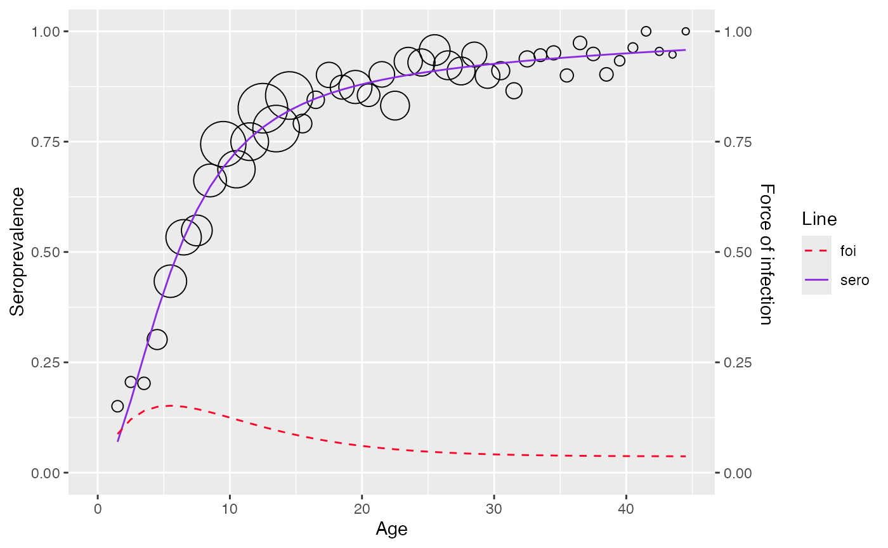

Model visualization
visualizing_model.RmdVisualize model
To visualize the model, user can simply use function
plot
hav <- hav_be_1993_1994
model <- fp_model(
hav$age, hav$pos, hav$tot,
p=c(1.5, 1.6), link="cloglog")
plot(model)
If implementation for confidence interval calculation is not yet
available, plot function would simply visualize
seroprevalence line
rubella <- rubella_uk_1986_1987
farrington_md <- farrington_model(
rubella$age, pos = rubella$pos, tot = rubella$tot,
start=list(alpha=0.07,beta=0.1,gamma=0.03)
)
plot(farrington_md)
Customize the plot
Function set_plot_style() is provided to customize some
attributes of the plot.
Current modifiable attributes include color, linetype for seroprevalence, foi and fill color for confidence interval
a <- hav_bg_1964
pos <- a$pos
age <- a$age
tot <- a$tot
gf_model <- polynomial_model(age, pos = pos, tot = tot, type = "Griffith")
# customize plot
plot(gf_model) +
set_plot_style(
sero = "#3de071",
foi = "#2f22e0",
ci = "#aaf2b2",
foi_line = "dotted",
sero_line = "dotdash"
)
#> Scale for colour is already present.
#> Adding another scale for colour, which will replace the existing scale.
#> Scale for linetype is already present.
#> Adding another scale for linetype, which will replace the existing scale.
#> Scale for fill is already present.
#> Adding another scale for fill, which will replace the existing scale.